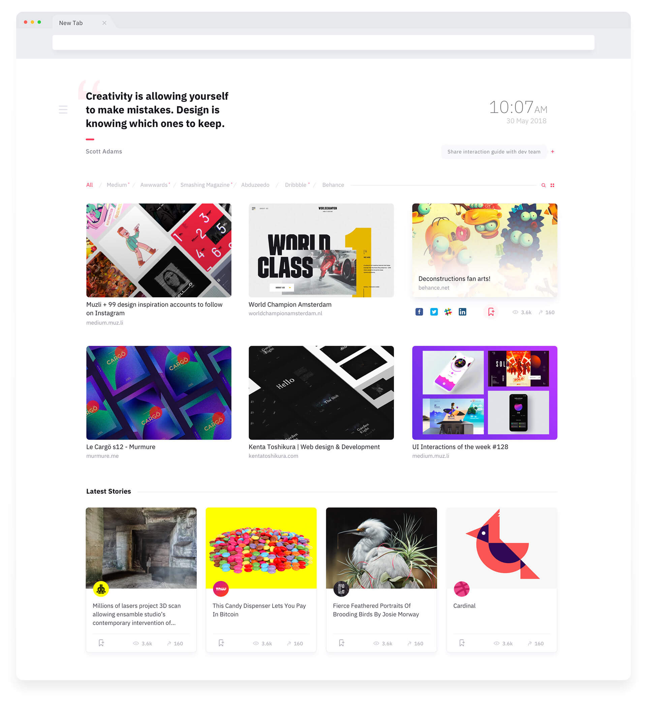
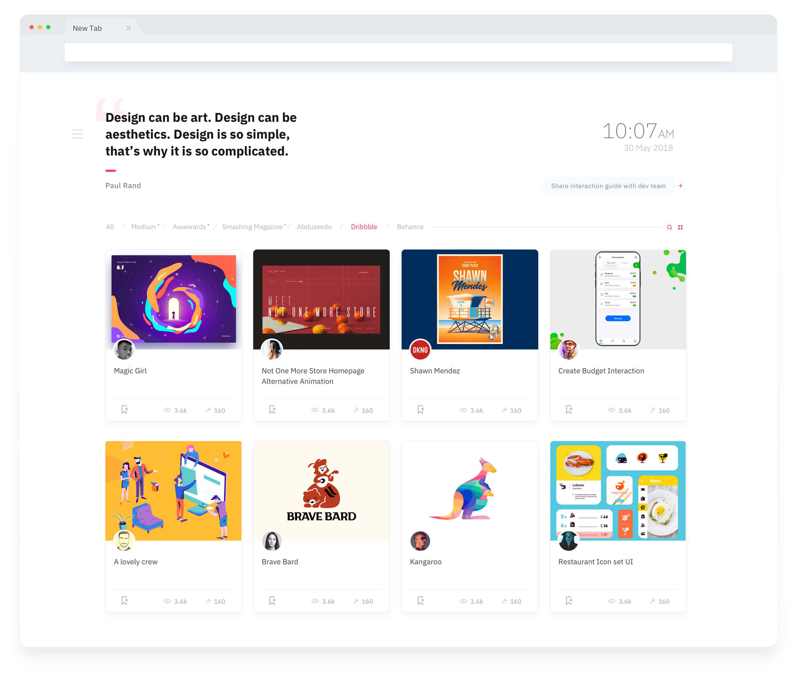
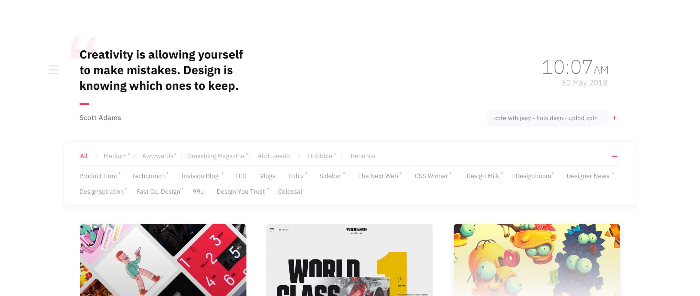
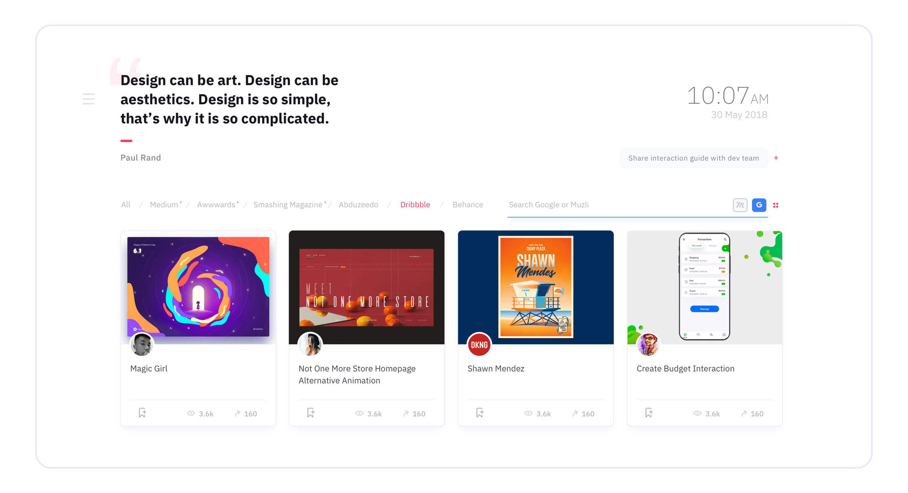
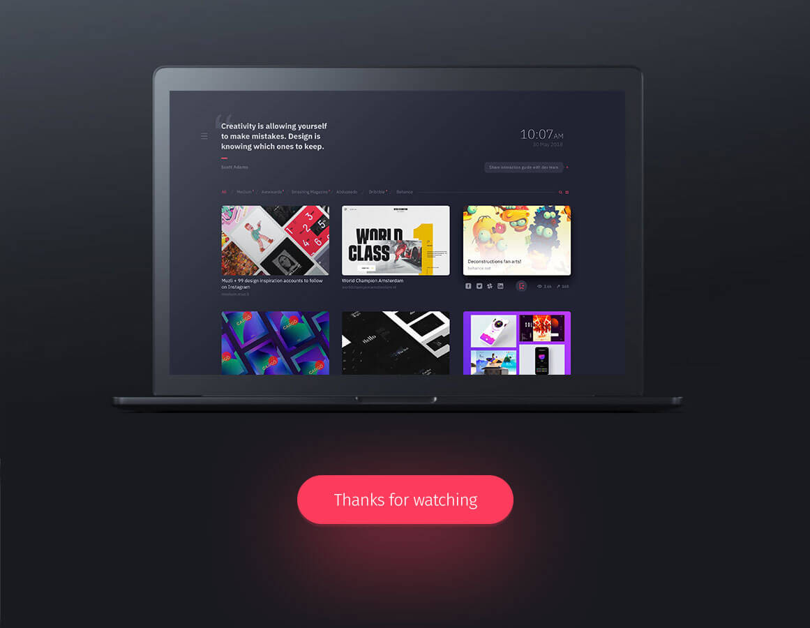

Muzli Re-imagined
Jun'18 | Sketch
Muzli is a great tool to keep up to date and motivated in design. I re-imagined Muzli experience with some minor tweaks in design. I approached design with a more text focused and added functions like a to-do note and an inspirational quote section.
  The one-liner to-do will be helpful to keep you organized on the task you want to perform next.
 back to works